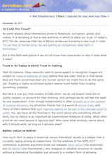
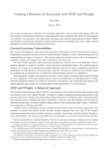
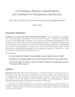
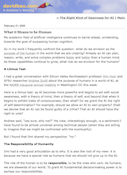

The Purpose of
Interpretability

NDIF Resilience
White Paper

OSTP RFI
Recommendations

What it Means
to be Human
Large-scale artificial intelligence has begun to confront humanity with an historic challenge: how to deal with a technology that is designed to surpass the boundaries of human understanding and control? The solution lies in resilience: As a society, we must develop the ability to sustainably adapt to unexpected challenges in AI.
Large-scale AI poses fundamental challenges that are poised to reshape society:
The gravity of these challenges demands solutions that do not lie in the technology alone, but in a societal investment in the science, engineering, and culture of resilience around AI.
To develop a resilient AI ecosystem, we must invest in three things:
These are all goals of the field of AI interpretability, which is the focus of my lab.